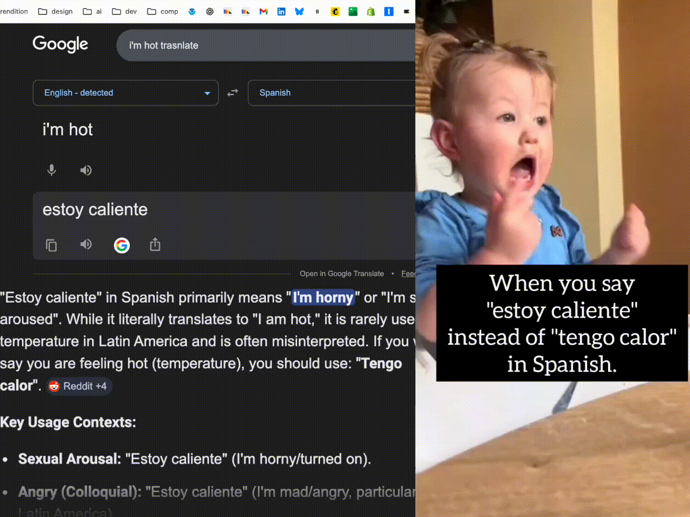

Your language expression wizard
konid (کنید) — Farsi for “do.” Take action.
An MCP server that coaches you on natural, socially-aware expression in any language. Not a translator — a wizard.
Install in Claude Code
Tell konid what you want to say. It shows you how a native speaker would actually say it — with cultural context, tone notes, and audio you can play through your speakers.
Teaches you what a native speaker would actually say, not textbook phrases.
Casual to formal, each with romanization, literal meaning, and tone notes.
Social notes so you don't accidentally decline when you meant "maybe."
Hear it spoken aloud. Say "speak slowly" for clearer pronunciation.
Tell it you're texting a date vs. emailing a boss — the options adapt.
Chinese, Japanese, Korean, Spanish, French, German, and more.
claude mcp add konid-ai -- npx -y konid-ai
{
"mcpServers": {
"konid": {
"command": "npx",
"args": ["-y", "konid-ai"]
}
}
}
{
"servers": {
"konid": {
"command": "npx",
"args": ["-y", "konid-ai"]
}
}
}
pip install edge-ttsANTHROPIC_API_KEY — get one hereAny language Claude knows can be coached — these have built-in voice support with auto-detection.
Bundle TTS natively so the only prereq is Node.js + an API key.
HTTP transport so konid works as a ChatGPT app, not just CLI tools.
Idiom databases, formality registers, and culture-specific coaching per language.
No API key needed — just install and go.